Mis Proyectos
To do list App
Diseño del flujo y la interfaz de una app de gestión de tareas personales (to-do app).
2025
Explorar

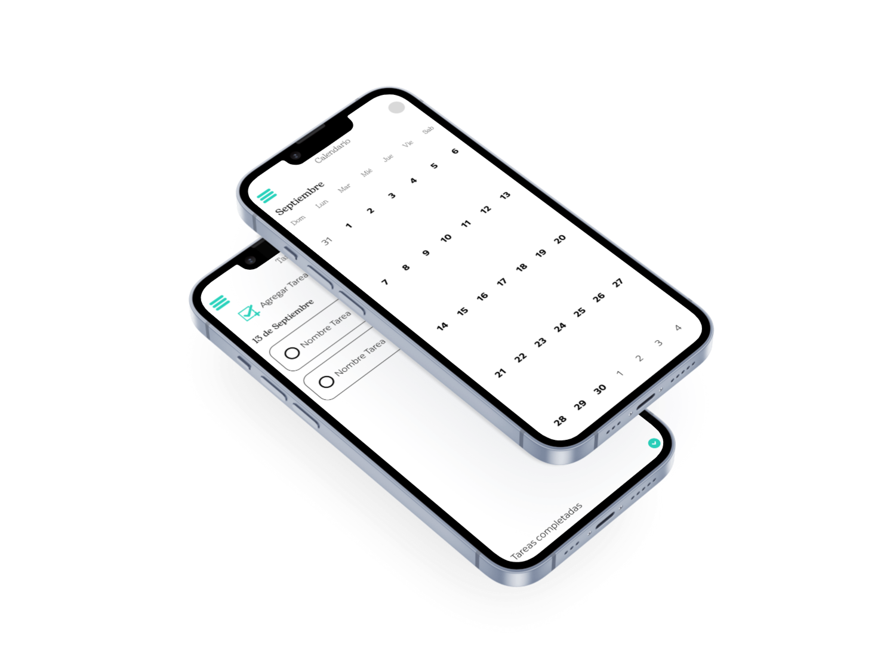
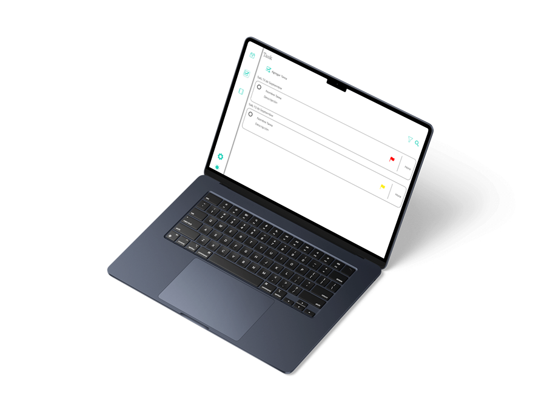
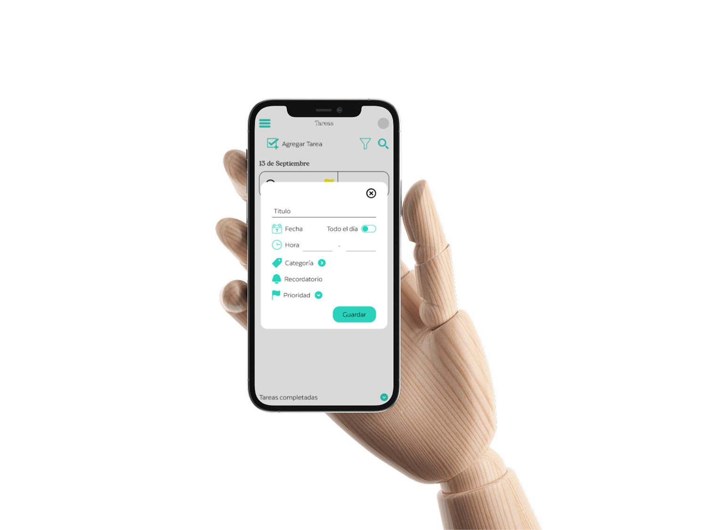
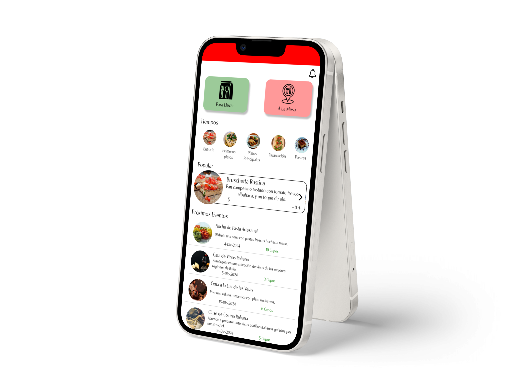
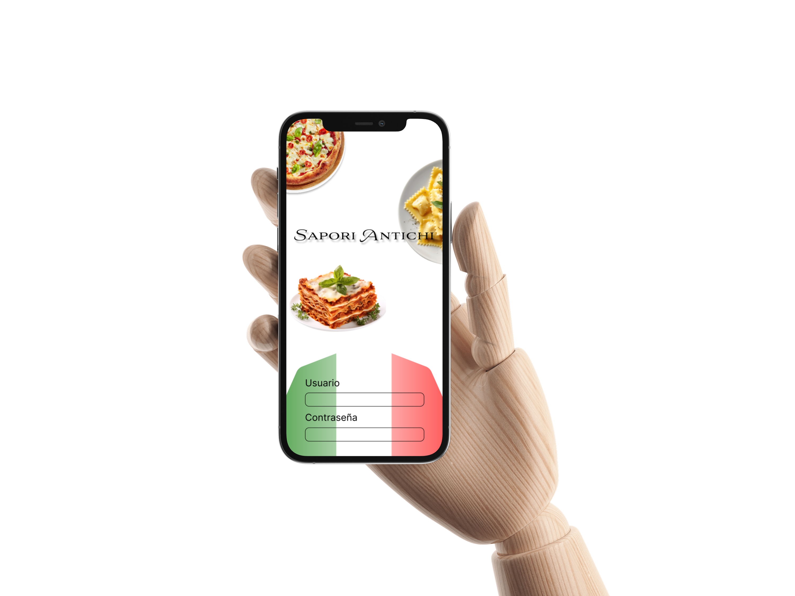
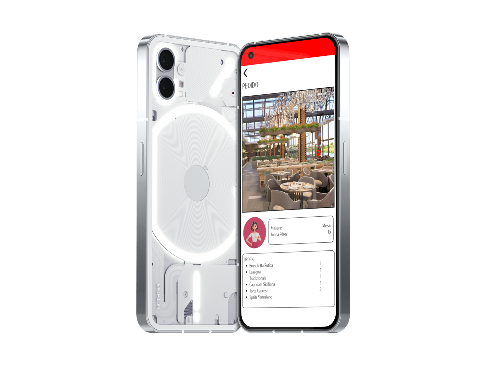
Sapori Antichi
Diseño de una aplicación para un restaurante italiano, que permite gestionar los pedidos a domicilio y para la mesa desde un solo sitio.
2024
Explorar
SouvenPort
Diseño de una red social que conecta a viajeros alrededor del mundo, donde cuentan sus experiencias y pueden llevar un registro de los sitios que han conocido.
2024
Explorar
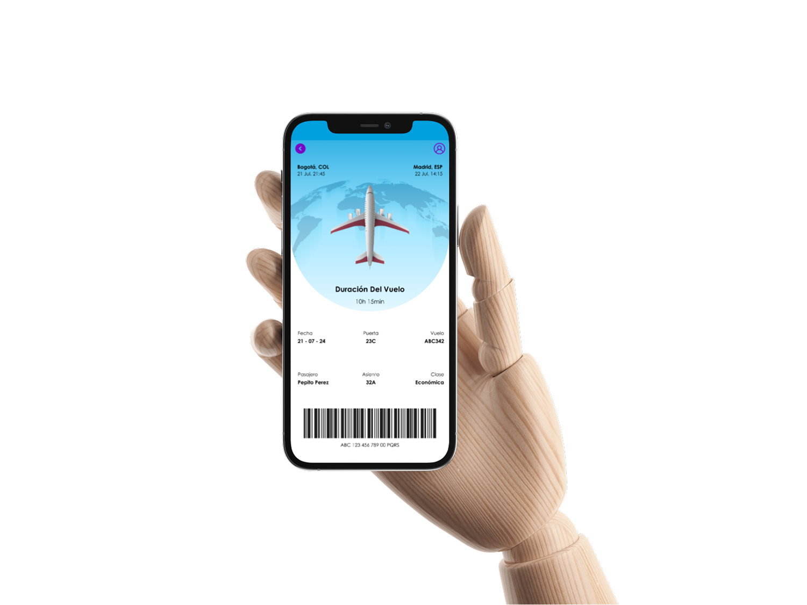
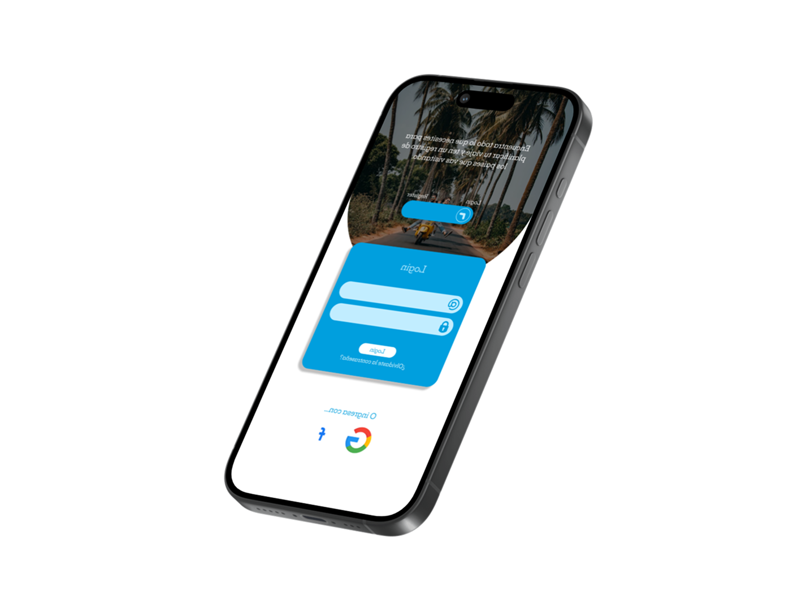
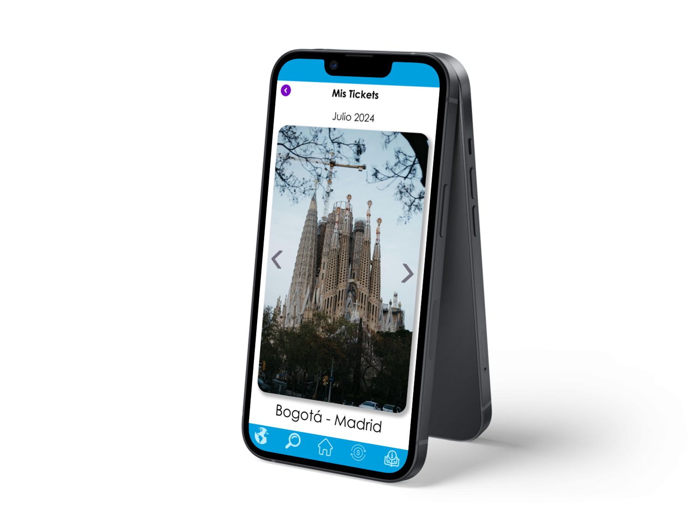
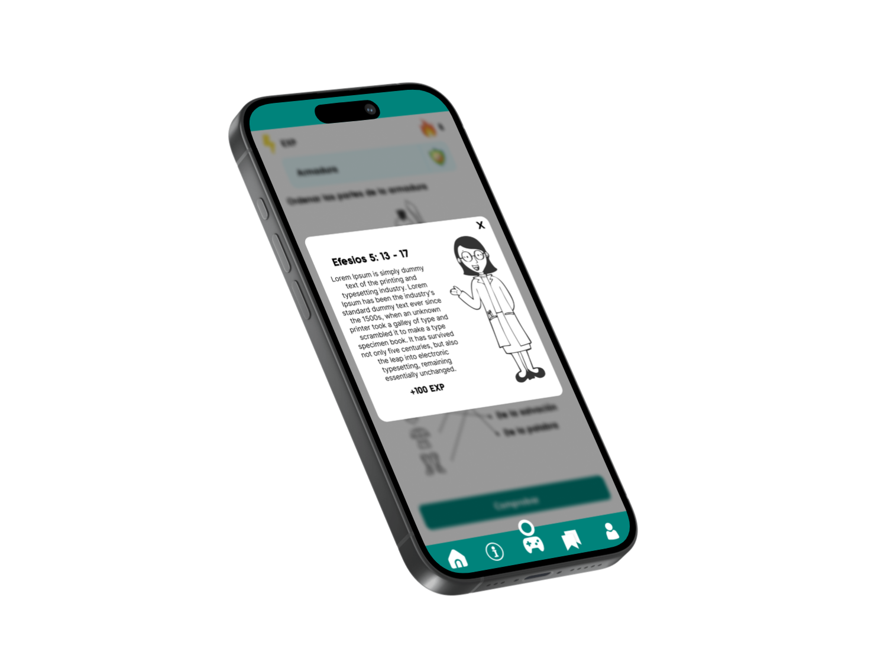
 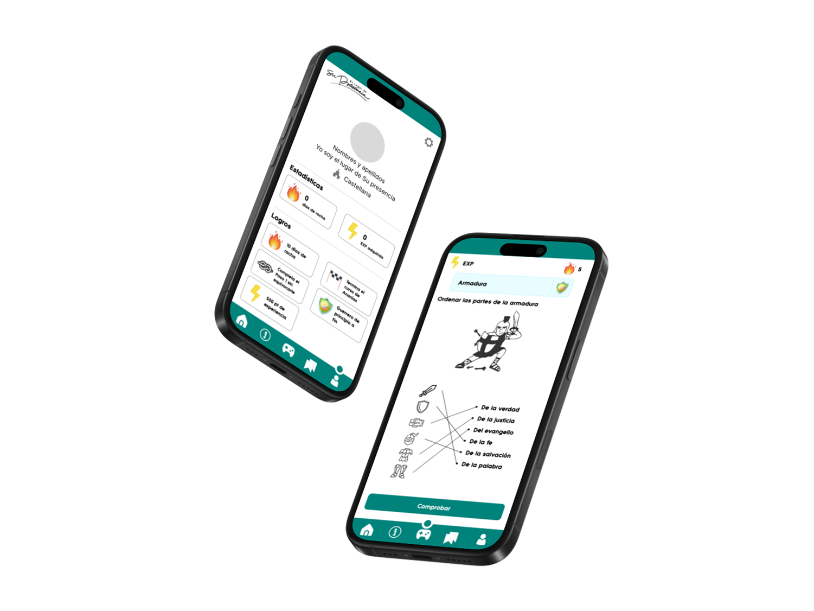
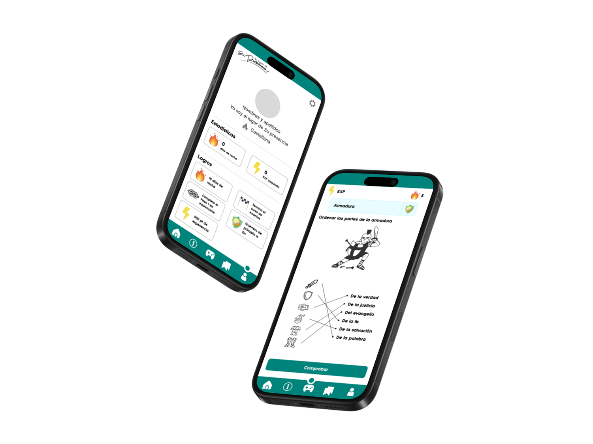
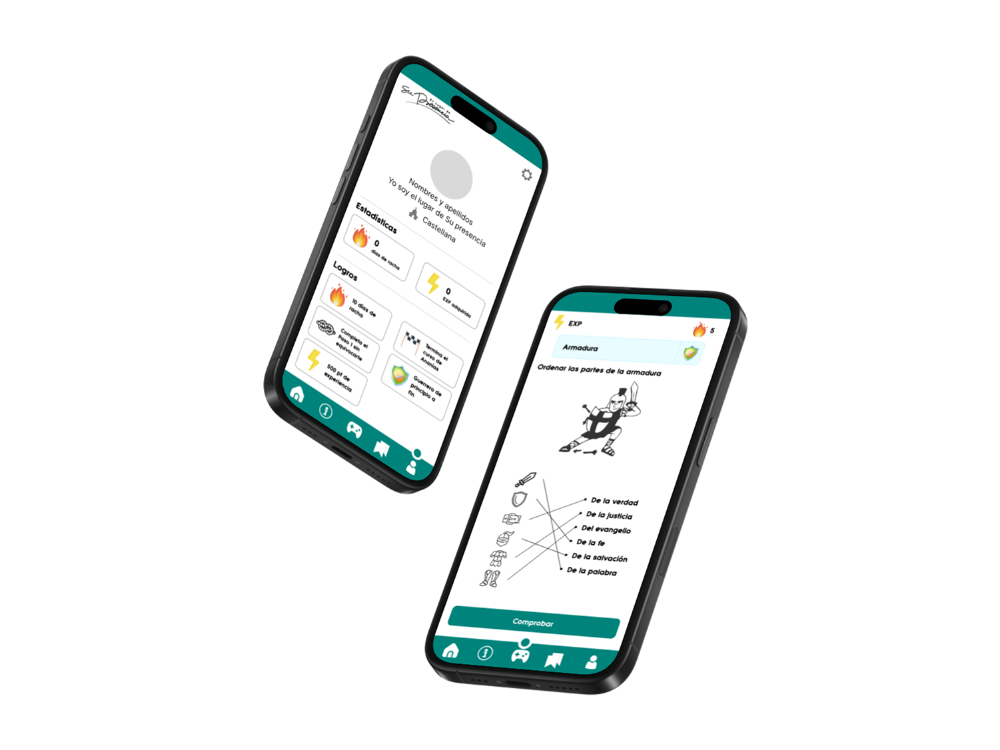
Ananías
Diseño de una aplicación interactiva que adapta la información del libro de "Ananías" del proceso de formación del la iglesia "El lugar de Su Presencia"
2024
Explorar
¿Quien soy?
Acerca de mi
LinkedIn
Instagram
Legal
Politica de privacidad
Terminos y condiciones
Suscribirse
Para mantenerte al día con mi trabajo y las últimas actualizaciones,
suscribete.
Correo electrónico